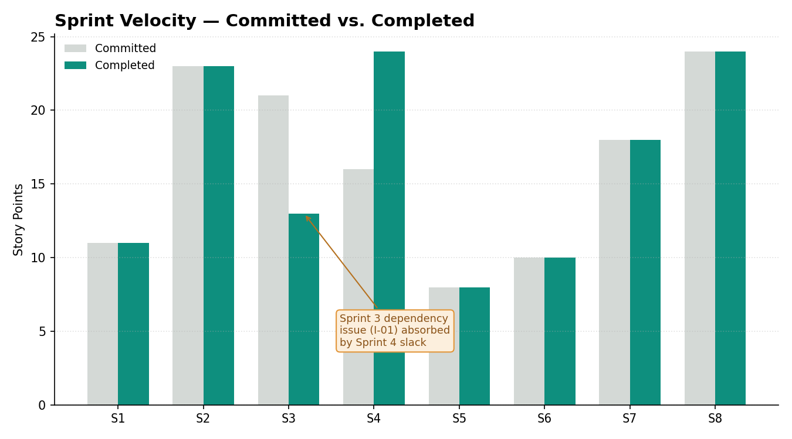

Execute · Document 10
Sprint Planning
Eight two-week sprints. Two are documented in full depth.
8 sprints across 2 releases, 2 weeks each. Team velocity stabilized around 24–28 points/sprint after Sprint 2.
| Sprint | Weeks | Goal | Committed Pts | Outcome |
|---|---|---|---|---|
| Sprint 1 | 3–4 | Auth, permissions, environment setup | 11 (+ infra groundwork) | Delivered on time |
| Sprint 2 | 5–6 | Contact & account management | 23 | Delivered on time |
| Sprint 3 | 6–7 | Deal pipeline (kanban, stage logic) | 21 | Delivered — see detailed plan |
| Sprint 4 | 7–8 | Admin, bulk import, audit logging, hardening | 16 | Delivered; Release 1 shipped on schedule |
| Sprint 5 | 9–10 | Reporting engine & live dashboard | 8 | Delivered on time |
| Sprint 6 | 11–12 | Report exports, rep/team views | 10 | Delivered — see detailed plan |
| Sprint 7 | 13–14 | Email integration, GDPR erasure workflow | 18 | Delivered on time |
| Sprint 8 | 15–16 | Zapier integration, data migration, backups | 24 | Delivered; Release 2 shipped on schedule |
Two sprints are documented in full detail below because each surfaced a real project management decision worth showing in depth — the rest followed a standard, uneventful sprint cadence and are summarized in the table above.
See release-velocity-chart.png for velocity trends across all 8 sprints.

